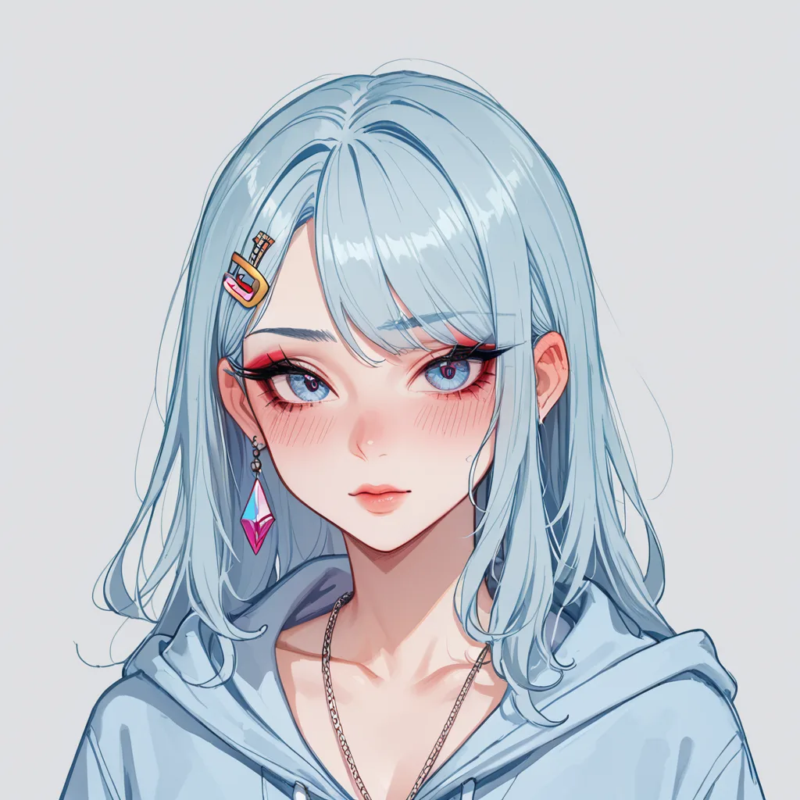

제목: 창작한 제목
[이미지 생성 지시]

구체적 니치 콘텐츠 작성
아식스 젤 카야노 14 OG 아이보리 컬러웨이의 2023년 리스탁에서 달라진 인솔 로고 프린트를 구체적으로 분석해 보겠습니다. 이 사건은 일반론적인 요약보다는 독자가 실제로 판단하거나 행동해야 할 구체적인 맥락을 제공하고자 합니다.

아식스 젤 카야노 14 OG 아이보리 컬러웨이의 2023년 리스탁에서 달라진 인솔 로고 프린트를 구체적으로 분석해 보겠습니다. 이 사건은 일반론적인 요약보다는 독자가 실제로 판단하거나 행동해야 할 구체적인 맥락을 제공하고자 합니다.